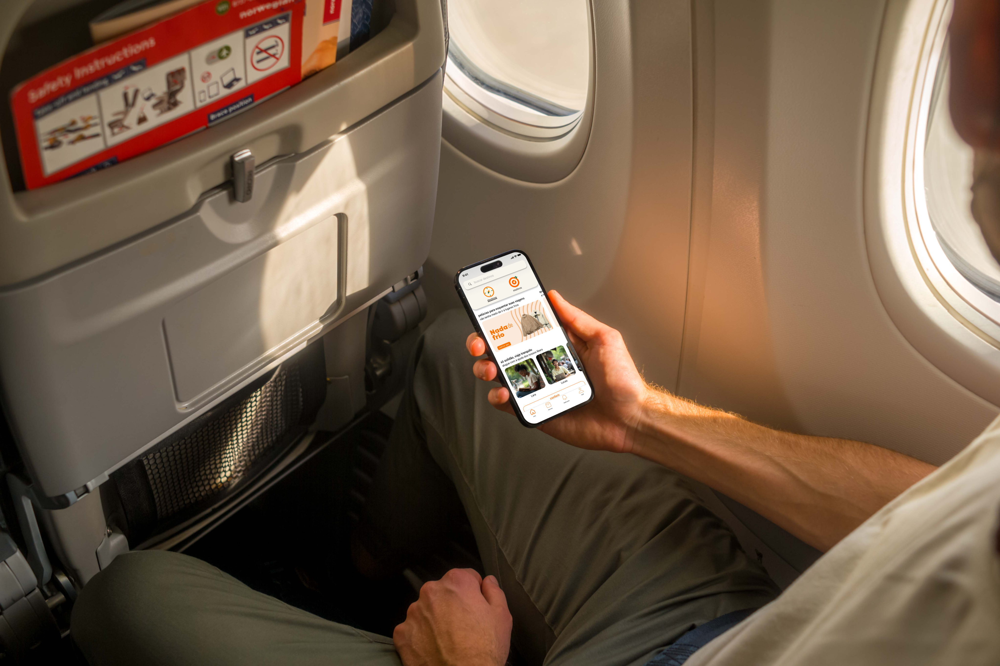

Repensando a bagagem na experiência de viagem
Como reformulei a experiência de viagem ao tratar a bagagem como um problema emocional, e não apenas logístico.
Vinicius Machado
Curitiba - PR
Transformo complexidade em clareza por meio de experiências funcionais, consistentes e pensadas para pessoas e negócios.

Como reformulei a experiência de viagem ao tratar a bagagem como um problema emocional, e não apenas logístico.
Cresci aprendendo a olhar para as coisas além da superfície. Em um contexto simples, desenvolvi o hábito de ressignificar o que estava ao meu redor, transformar o comum em possibilidade e encontrar sentido no que parecia disperso. Com o tempo, esse olhar passou a orientar quem eu sou e a forma como projeto.
Hoje, vejo no design uma maneira de transformar complexidade em clareza. Busco criar experiências funcionais, acolhedoras e consistentes, conectando necessidades reais das pessoas a objetivos de negócio com sensibilidade e intenção. Meu trabalho parte desse desejo de simplificar o que é complexo, organizar o que está disperso e dar forma a soluções mais fluidas, úteis e significativas.